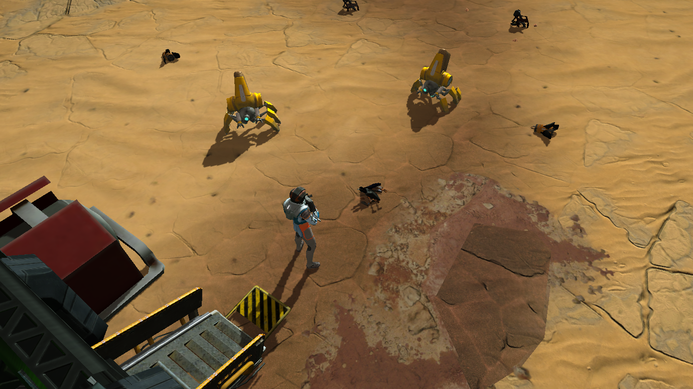
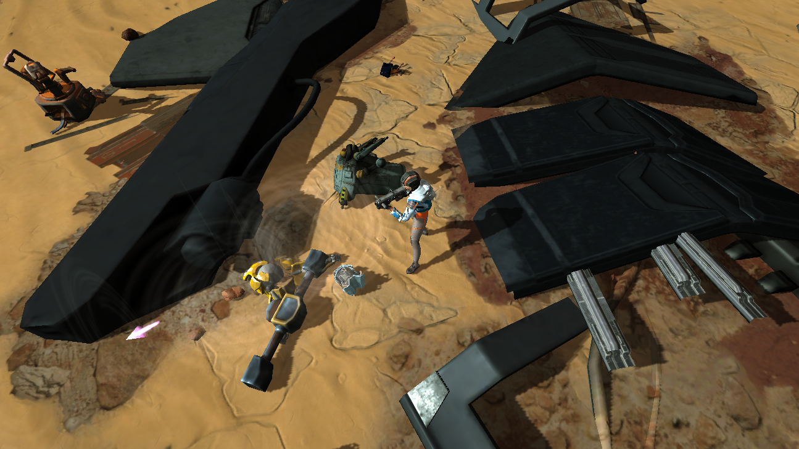
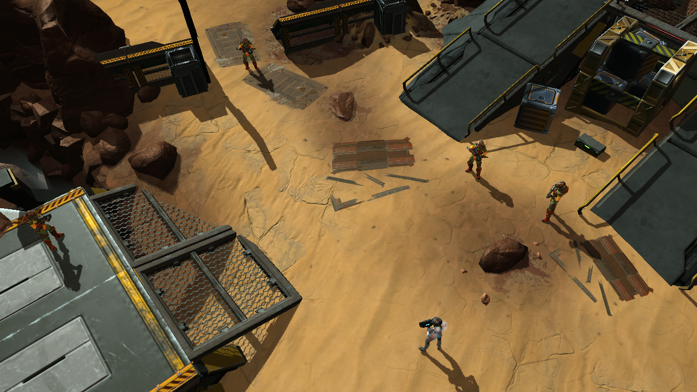
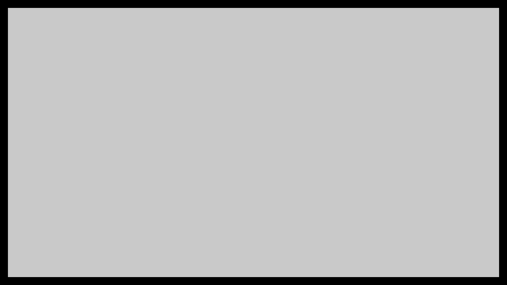
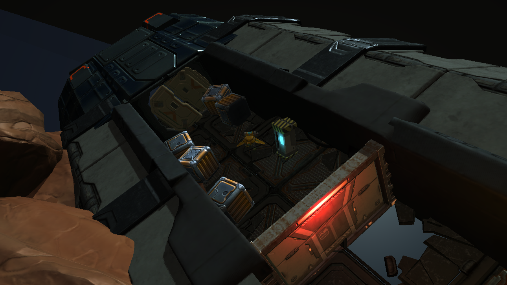

ПРОЕКТЫ
CERES SURVIVAL
DEADSHOT BRIGATE

Ceres Survival – это мобильный survival в космическом сеттинге с глубоким нарративом и визуально разнообразными локациями. Игрок посещает уникальные астероиды, уничтожает врагов и добывает ресурсы для развития корабля.
Локации
Abandoned Fields
Forlorn Cavern
После прохождения первого туториала, где игрок учится управлению персонажем и стрелять, его корабль терпит крушение на Abandoned Fields, заброшенной шахтерской колонии. Цель здесь – научиться добывать базовые ресурсы необходимые для выживания и разобраться в основах крафта.
Локация нелинейна: есть основное задание и несколько дополнительных. На полное прохождение уйдет примерно час. Также игроку демонстрируется один из главных USP проекта: рельеф на уровне и джетпак.
Ключевые точки
1. Место крушения
Игрок начинает отсюда. Его первая задача – собрать примитивные инструменты и оружие. К счастью, вокруг валяется множество обломков, которые вполне подходят. Здесь же игрока встречают мирные роботы, которые помогают ориентироваться на карте, пока в игре нет навигации.
2. Остов корабля
Остов корабля – центральная место на уровне. С помощью только что собранного резака игрок распиливает обшивку и получает первые ресурсы для строительства станков. Здесь же игрок встречает и первое сопротивление – враждебных роботов.
3. Овраг
Другая отличительная особенность уровня – длинный овраг, который разделяет его на две части. Выступ посередине – шорткат, с помощью которого можно перебраться на другую сторону, но для этого требуется джетпак. Обратно его можно пересечь обычным прыжком.
4. Аванпост
Все обновления сайта будут публиковаться в наших соцсетях: Telegram, Vk и Discord.
5. Лагеря бандитов
Заброшенные бункеры – необязательный для прохождения контент. Чтобы попасть внутрь игроку требуется распилить двери, потратив на это несколько инструментов.
6. Заброшенные бункеры
Заброшенные бункеры – необязательный для прохождения контент. Чтобы попасть внутрь игроку требуется распилить двери, потратив на это несколько инструментов.
7. Рухнувший корабль
Еще одно место, куда можно попасть с помощью джетпака - рухнувший корабль. Игра позволяет разместить пол под углом чтобы создать еще больших эффект разрушенности. Чтобы попасть внутрь нужно распилить дверь как в бункерах. Если у игрока не найдется подходящего количества инструментов ему придется вернуться и потратить топливо джетпака.
Если здесь чего-то не хватает или ты сделал для Mothership что-то совершенно новое, смело пиши Михаилу Гордееву или Антону «Ottar» Прохорову. Добавим!
Описание 2
Ну всё, удачи на бескрайних просторах космоса, и не забывай смотреть по сторонам...
•